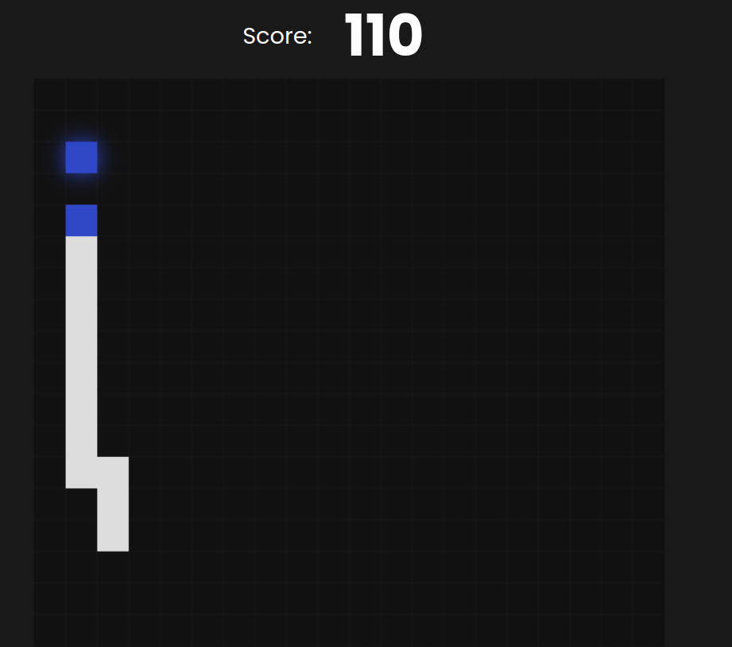

Oficina de Ideias
O lugar onde, as ideias ganham vida e as dúvidas se renovam!
-
Foi o meu primeiro projeto no mundo do desenvolvimento frontend,
o meu primeiro contato com HTML e CSS.Fiquei muito empolgado com essa experiência, e uma das grandes diferenças em relação ao backend é que agora posso mostrar diretamente o que estou criando, em vez de apenas explicar teoricamente. Não preciso mais dizer 'imagine...' - posso simplesmente demonstrar na prática. Foi uma jornada empolgante e estou ansioso para continuar aprendendo e criando no mundo do frontend
acesse clicando aqui
-
Este projeto foi criado durante o curso de
HTML e CSS: praticando HTML/CSS da alura.Recebemos um modelo fornecido pelo FIGMA e tivemos o desafio de transformar as informações fornecidas em nosso próprio site. Foi um trabalho mais complexo em comparação com os projetos anteriores, permitindo-nos praticar ainda mais técnicas avançadas, como o posicionamento flexível (Flexbox) e o sistema de grid, além de explorar novas maneiras de criar botões e posicionar elementos com CSS.
-
O frontend da minha api Bill Manager.
ainda estou implementando as funcções, ate o momento, só fiz a tela de login
-
Um game desafiador
Por mais que tenha sido feito com a ajuda de um vídeo no YouTube, pude aprender bastante com o exercício, tanto no simples fato de tentar compreender o que ele estava fazendo, quanto em descobrir coisas novas, novos métodos, novas funções e desfrutar um pouco da mágica do CSS. Além disso, foi uma ótima experiência poder jogar o jogo que acabei de criar, um clássico nos "tijolões"... xD
 Saiba mais.


O frontend da minha api Bill Manager.
ainda estou implementando as funcções, ate o momento, só fiz a tela de login
Este projeto foi criado durante o curso de
HTML e CSS: praticando HTML/CSS da
alura.
Recebemos um modelo fornecido pelo FIGMA e tivemos o desafio de transformar as informações fornecidas em nosso próprio site. Foi um trabalho mais complexo em comparação com os projetos anteriores, permitindo-nos praticar ainda mais técnicas avançadas, como o posicionamento flexível (Flexbox) e o sistema de grid, além de explorar novas maneiras de criar botões e posicionar elementos com CSS.
Foi o meu primeiro projeto no mundo do desenvolvimento frontend,
o meu primeiro contato com HTML e CSS.
Fiquei muito empolgado com essa experiência, e uma das grandes diferenças em relação ao backend é que agora posso mostrar diretamente o que estou criando, em vez de apenas explicar teoricamente. Não preciso mais dizer 'imagine...' - posso simplesmente demonstrar na prática. Foi uma jornada empolgante e estou ansioso para continuar aprendendo e criando no mundo do frontend